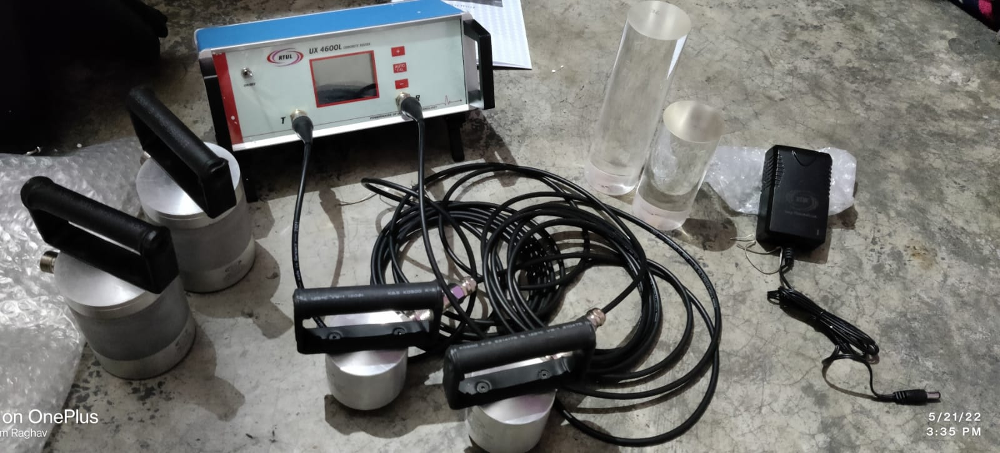
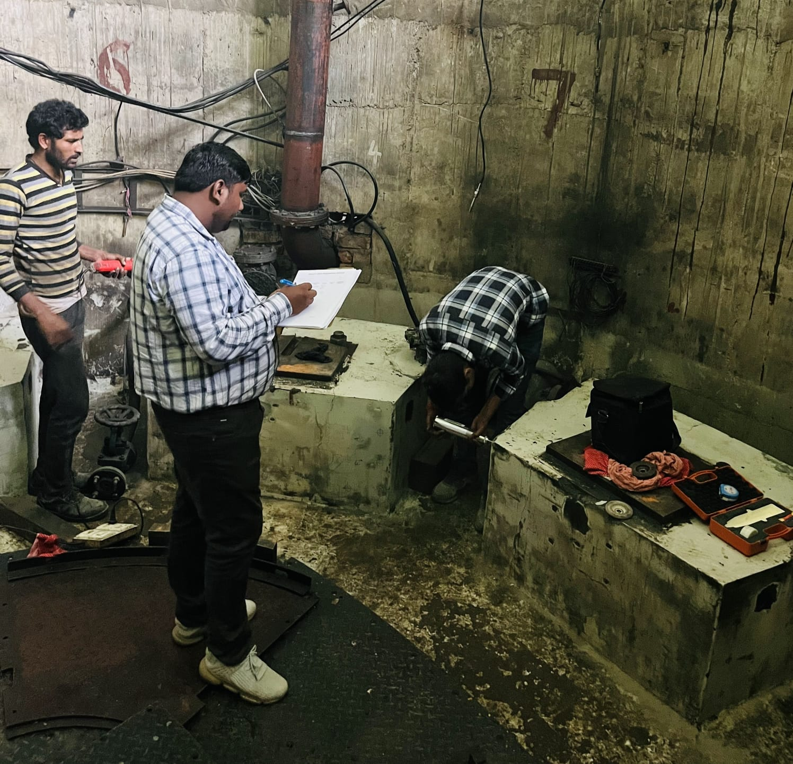

Advanced testing solutions to evaluate structural strength, durability, and integrity without causing damage to the structure.
The Ultrasonic Pulse Velocity (UPV) Test is a non-destructive method used to assess the quality and uniformity of concrete by measuring the speed of ultrasonic waves passing through it.
It helps detect cracks, voids, and defects within the structure, ensuring the reliability and strength of construction materials.


The Rebound Hammer Test is a non-destructive testing method used to estimate the compressive strength of concrete by measuring surface hardness.
It provides quick and reliable results, making it ideal for preliminary assessment of structural condition and uniformity.
The Carbonation Test is used to determine the depth of carbonation in concrete, which affects the durability and corrosion resistance of reinforced structures.
Evaluates long-term durability of concrete structures.
Identifies risk of steel reinforcement corrosion.
Measures carbonation penetration in concrete layers.
Helps ensure long-term safety of infrastructure.

Core Cutting is a semi-destructive testing method used to extract concrete samples for laboratory analysis of strength and material quality.
It provides accurate data for assessing structural performance and verifying construction quality.
Drilling cylindrical core samples from concrete.
Careful extraction without damaging structure.
Laboratory testing for strength and composition.
Analysis and reporting of structural condition.
The Half Cell Potential Test is used to assess the probability of corrosion in reinforcing steel within concrete structures.
This test measures electrical potential differences on the surface of concrete to identify areas where reinforcement corrosion is likely to occur.
It is widely used for durability assessment and maintenance planning of reinforced concrete structures.
Identifies areas prone to reinforcement corrosion.
Assessment without damaging the structure.
Helps plan repairs before major damage occurs.
Ensures long-term durability of concrete structures.

The Mortar Test is used to evaluate the strength, bonding quality, and performance of mortar used in construction and repair works.
It helps assess the durability of masonry structures and ensures proper material performance for long-term stability.